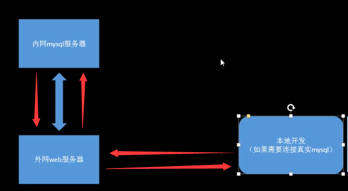

wokerman作为mysql代理
我们知道WorkerMan是一款纯PHP开发的开源的高性能的PHP socket服务器框架，基于WorkerMan开发者可以开发出各种网络服务器，例如基于websocket的服务器、游戏服务器、移动通讯服务器、智能家居服务端、物联网服务、web服务器、RPC服务器等等。几乎任何基于TCP/UDP通讯的服务端都可以用WorkerMan来开发。WorkerMan使得开发者摆脱PHP只能用于Web开发的束缚，向更广阔的前景发展。
今天的文章就是关于workerman可以作为客户端接收处理来自远程服务端的数据么？
需求
外网要访问到内网的mysql服务器，需要有一台外网能访问到且能访问内网的服务器，而在这台服务器中，我们使用wokerman对数据进行转发。如下图所示：

演示代码如下:
1
2
3
4
5
6
7
8
9
10
11
12
13
14
15
16
17
18
19
20
21
22
23
24
25
26
27
28
29
30
31
32
33
34
35
36
37
38
39
40
41
42
43
44
45
46
47
48
| <?php
use Workerman\Connection\AsyncTcpConnection;
use Workerman\Worker;
require 'workerman/Autoloader.php';
// 创建一个Worker监听9090端口，不使用任何应用层协议
$tcp_worker = new Worker("tcp://10.211.55.13:9090");
// 启动4个进程对外提供服务
$tcp_worker->count = 4;
//当连接建立时触发的回调函数
$tcp_worker->onConnect = function($connection)
{
echo "new connection from ip " . $connection->getRemoteIp() . "\n";
// 异步建立一个到实际mysql服务器的连接
$connection_to_mysql = new AsyncTcpConnection('tcp://127.0.1:3306');
// 执行异步连接
$connection_to_mysql->connect();
// mysql连接发来数据时，转发给对应客户端的连接
$connection_to_mysql->onMessage = function($connection_to_mysql, $buffer)use($connection)
{
$connection->send($buffer); //发送mysql数据
};
// 客户端发来数据时，转发给对应的mysql连接
$connection->onMessage = function($connection, $buffer)use($connection_to_mysql)
{
$connection_to_mysql->send($buffer);
};
};
// 当客户端发来数据时
$tcp_worker->onMessage = function($connection, $data)
{
// 向客户端发送hello $data
$connection->send('hello ' . $data);
$connection->close();
};
// 运行worker
Worker::runAll();
|
参考mysql代理的手册:http://doc3.workerman.net/worker-development/connect.html